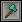
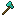

Create your first item
For an existing model, use the model_path template. You only need the item’s base model and the tier arguments.
The template
Create a file in configuration/items/ with this content:
items:
NAMESPACE:ID: # This is the ID used in MMOITEMS (item_model)
material: diamond_sword
template:
- custom_tiers:tiers # Always the same template
arguments:
type: model_path # Template for existing models
tiers: 3 # Number of rarities; default 1=COMMON, 2=UNCOMMON, 3=RARE
#tier_1: RARE
#tier_2: EPIC # If you uncomment these 3 lines, those will be the 3 possible tiers
#tier_3: LEGENDARY
display: rare # Tier shown by CustomTiers
model_path: minecraft:item/diamond_sword # Model pathThe example arguments
| Argument | What it does |
|---|---|
template: custom_tiers:tiers | Enables the addon’s tier formatter. |
type: model_path | Uses the template for existing models. |
tiers: 3 | The item supports 3 tiers: by default common, uncommon and rare. |
display: rare | The tier shown by default. |
model_path | A model path (not a texture path). |
After saving:
/ce reload all
/ce item get NAMESPACE:IDItem states
The background changes depending on the context.

DefaultNormal inventory.
SelectedItem selected in the hotbar.

CarriedMoving inside the inventory.
Custom texture?
model_path points to an existing model. If you want a new texture, create a model with
"parent": "minecraft:item/generated" and use its path as model_path.
Next: the arguments shared by all templates.